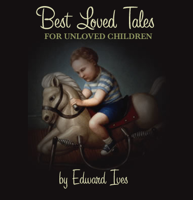

Home Blogs Best Loved Tales for Unloved Children
Preface |
God is Seven |
2gether 4ever |
The Killer |
Breakfast at the Gotham Cafe |
Scars |
It's a Good Life |
What Was Lost
* * *
Every day we slaughter our finest impulses. That is why we get a heart-ache when we read those lines written by the hand of a master and recognize them as our own, as the tender shoots which we stifled because we lacked the faith to believe in our own powers, our own criterion of truth and beauty. Every man, when he gets quiet, when he becomes desperately honest with himself, is capable of uttering profound truths. We all derive from the same source. There is no mystery about the origin of things. We are all part of creation, all kings, all poets, all musicians; we have only to open up, to discover what is already there.
Henry Miller, Sexus
This is a writing practice site. You will not find here polished, finely crafted prose, or even rough drafts, but a hodgepodge of story sketches, experiments, and halting steps towards writing that I don't normally do. I'm putting them online because I find it difficult to write in a vacuum, and I'm hoping the format will make it easier to write with more regularity. If you want to read these stories, you're certainly welcome to, and I hope you enjoy them.
Regards,
Edward Ives
* * *
The early summer sun hung in a frozen swirl of clouds in a pale blue sky. Goodkind was first over the dune, gangly tanned legs kicking up sprays of sand. He swept hair out of his eyes and turned to see if Fellowes had caught up. Fellowes, plumper and less agile than his athletic friend, struggled a bit on the steep ascent, but soon joined Goodkind, and the two made their way down to the beach.
Goodkind strode out to where the waves washed up on the sand, and stood with his hands on his hips, letting the cool water slide up around his ankles and descend, leaving thin trails of salt on his skin. He scanned the area for signs of life: crabs, seashells, birds. He had left his Audubon field guides at home, but read them so religiously that he felt certain he could name virtually any living creature he saw.
"This is the place, is it?" Fellowes asked, standing next to Goodkind and splashing incoming waves with an idle foot. "This is where it is?"
Goodkind nodded. "Somewhere out here. No one knows where. Nobody bothered to keep track of it."
"Crikey," Fellowes said. "You figure we got it between our toes when we came out here?"
"Doubt it," Goodkind said, shaking his head.
The pair stood for a bit, lost in what passed for contemplation in young boys, then retreated to the warmer, drier sand to eat their lunch.
Fellowes opened the flap of his knapsack. "Bacon or salami?" he asked, rummaging through the wax-paper-wrapped parcels.
"Bacon, please," Goodkind said, and Fellowes pulled out a square parcel with the letter "B" marked on it in black ink.
"Here you go," Fellowes said, handing Goodkind the sandwich.
"Thank you," Goodkind said, taking it.
Fellowes took an "S"-marked salami sandwich for himself. The two sat and ate in companionable silence.
After a time, Fellowes spoke. "I wonder how long it's been," he said, "since it happened."
Goodkind said, "Mr. Palmer says it's been over a hundred years. Nobody knows for certain, because nobody knew what had happened, at first. It was years before they discovered the truth."
"Crikey," Fellowes said, chewing thoughtfully on a bite of salami. "A hundred years. That's old."
"Yeah," Goodkind said. "Are there any crisps?"
"Vinegar and regular."
"Regular, please."
Fellowes handed over a small foil bag. Goodkind tore it open, ate a thin, greasy-looking chip. "Pretty good," Goodkind said, chewing. "Are they real?"
"Mum gets them from overseas. They're real, I think."
Goodkind took a bite of his sandwich and coughed. "Oog. Got some sand in that bite. Got anything to drink in there?"
Fellowes reached into the knapsack and brought out a small bottle of orange soda, which he tossed over to Goodkind. Then he stood and walked back to the shoreline. He looked out over the water, scanning for the smallest sign of anything out of the ordinary. But it was just the sea, green and blue and in constant motion with the breath of the wind.
After a few moments he sensed Goodkind standing next to him. Fellowes shivered as a cold wave splashed up over his knees. The sky seemed to have darkened slightly, and it took some of the tranquil eternity out of the afternoon. He tried to remember the verse that Mrs. Lees had taught them last autumn, for the holiday pageant. He spoke the words aloud:
"And the darkness was bound up,
And with it all the disciples of the darkness, for
They who had done harm against their brethren
Were not spared, nor their defenders,
And all were bound into a mote of dust
And cast into the infinite waters."
Fellowes shivered again.
Goodkind said, "We'd better be getting back. My dad's taking us all out for dinner tonight, and he'll be annoyed if we're not ready when he gets home from work."
"Okay," Fellowes said.
The boys packed up the remnants of their lunch with perfunctory efficiency. Fellowes pulled his knapsack over his shoulders, and they trudged up the dune. At the top, Fellowes stopped abruptly. "Goodkind?" he said.
"Yeah?"
"Do you think that story's true? Or just something they tell children to make them behave?"
Goodkind shrugged. "I believe it. I don't know."
Fellowes glanced around, as if afraid of being overheard. "I think that story's bollocks," he muttered. "I think it's a load of shit."
Goodkind giggled. "Don't go saying stuff like that around Mr. Palmer," he said. "Not unless you want to be writing lines during next year's holiday feast."
Fellowes stared at him dully, eyes unfocused and cloudy, and then his expression warmed into an impish grin.
"Yeah," he said. "Right."
"Right."
The boys marched back to town as the sun began its slow descent into the greenish-black waves.
* * *
I decided to take this story offline for the time being, because I was way too tired and/or drunk when I wrote this to write it the way I wanted to, and I'd like to just rewrite the whole thing.
* * *
He waited for her in the kitchen, a faint taste of almonds in his mouth from the cookies she'd left on the table. She entered and flicked on the light; he raised the gun.
"I've been waiting for you," he said.
She glanced down at the empty plate, then met his eyes, smiling.
"So have I."
Originally written in 1999, reposted here.
* * *
The mingled odors of grease and mildew permeated the one-room apartment on Riddler Avenue. The smell insinuated itself into the nicotine-stained curtains and the unwashed sheets in which Batman slept. For his part, Batman had long since stopped smelling this odor; it had become just another fading color on the cracked wallpaper, just one more thing to ignore on his daily trips to and from bed. Some mornings, the grease and mildew smell was joined by the the pungent aroma of whiskey-laced vomit. But not this morning, and so Batman awoke and sat up in bed as usual, his senses impeded by nothing more than the air he had been breathing for the past five years of his life.
Batman looked to his side, at the window through which the dawn light streamed, red and yellow, through the warpedblinds. The sun had risen to between the fifth and eighth slats, which could only mean that it was seven o'clock, and that his alarm clock had failed to wake him in time for work.
"Damn," Batman muttered, and swept the sheets from his body as he swung out of bed. In the same movement, he reached to the end table and picked up the phone. It was dead. He looked down and saw that he had unplugged it during the night. Had it been plugged in, he would have been woken by a frantic phone call from his irate boss. Fucking old man. Five years slinging hash in the Gordon's rundown greasy spoon, day in, day out, and the bastard still wouldn't cut him any slack. Like the lousy eight bucks an hour the job paid was enough to inspire him to drag his ass out of bed every morning and clock in right on time.
Yeah. Right.
Batman rose and stumbled into the bathroom to take a leak. He brushed his teeth and adjusted his mask, pulling down roughly on one side so that the mask covered what was shaping up to be a nasty little pimple on his right cheek. Leaving the bathroom, he looked around for his cape, saw it hanging on a chair. Momentarily he debated whether to wear it or not, as hot as the days had been lately. Finally he decided to put it on. The bossman liked for him to be in uniform, and Batman figured today probably wasn't the day to antagonize him.
- - -
The Gotham Café sat on the corner of Penguin and Scarecrow Street like a disappointed lover, drab and sullen. A neon sign announcing the diner's name in glowing red script sat stuttering in the middle of the window, surrounded by flyspecked glass and fronted by black cast-iron bars. The iron bars had arrived at about the same time as the paint on the outside walls had begun to fade. The side wall of the café had once sported a cheerful mural, painted by Barbara Gordon herself, depicting a steaming mug of coffee and a plate of eggs, sunny-side up. The mural was still there, but hidden beneath layers of graffiti. This was the part of his commute that Batman hated most. He had yet to look at that crazyquilt of graffiti tags without seeing the mural underneath. Seeing the mural brought memories of Barbara, and memories of Barbara rarely brought Batman any joy. Yet he found it impossible not to glance at it each morning as he came in to work.
Batman swung open the doors of the café and stepped inside; the clatter of dishes and murmur of voices and moving bodies enveloped him like a dense fog. At the rear of the café, behind a display case in which three apple pies lay as if embalmed, Jim Gordon, owner of the Gotham Café, stood facing the alcove leading to the kitchen. He was yelling something and gesturing angrily with both hands; Batman couldn't quite make it out, but from the pitch and tone of Gordon's voice, he was sure it wasn't anything he wanted directed at him.
Gordon spun around as Batman approached, and Batman swore he saw the old man snarl. "Where the hell have you been?" Gordon growled as Batman stepped past him and plucked a clean apron from a peg beneath the counter. "I've been trying to call you all goddamn morning. Your phone off the hook again?"
Batman nodded, tied on the apron. "I'm sorry, Mr. Gordon," he said. "It won't happen again."
Gordon shook his head; it wasn't enough. "You bet your fuggin' ass it won't happen again."
He pointed to the kitchen, where a slender, middle-aged man was awkwardly holding a spatula as tendrils of smoke curled up to obscure his face. "Lookit here," Gordon continued, jabbing his finger in the air. "I had to put Merkel in the kitchen this morning to cover for your lazy ass. You think Merkel can cook worth shit? He's a goddamn waiter! Fuck…shit is right. Half the fuggin' customers are walking out of here holding their stomachs. This happens again tomorrow, I'm out of business."
Batman nodded his head, shoulders slumped. "Yeah, I know, I know," he replied, his voice low and penitent, what Gordon wanted to hear. He was too tired this morning to offer any kind of smartassed comeback. This wasn't the time or place to get into it with the old man. "Like I said, it won't happen again."
"Bet yer fuggin' ass," Gordon muttered as he turned to pour a cup of coffee. "Now get back in that kitchen and tell Merkel to come out and mop these fuggin' floors."
Batman slouched around the corner into the kitchen. Upon seeing him, a relieved Merkel dropped his spatula in the sink and squeezed past Batman, mumbling a hasty greeting. Batman surveyed the mess Merkel had left behind. Three eggs lay burning on the grill in a pool of blackened grease. What had come out of the package as a handful of hash browns now lay in a limp yellow clump on the side of the grill that Merkel had forgotten to turn on, so that the frozen potatoes had thawed without cooking and resolved into a spongy mush.
Batman sighed and began to clean up the mess. He was short on patience today and hadn't felt much like putting up with one of Gordon's tirades, but beneath his irritation he knew that Gordon had a right to be upset. Batman had let him down on more than one occasion. He knew that the old man blamed him for Barbara leaving the diner and running away to Metropolis.
No, Batman thought. She didn't run away. Barbara was never the type to run from anything. What she did was simply trade me in. She traded me in for an art career and a new boyfriend.
The boyfriend had turned out to be Two-Face, Batman's old buddy from Gotham College. He remembered the day, a mere two years after graduation, when Two-Face sauntered into the diner, shiny as a new-minted nickel in his Armani suit. He'd done well for himself, breezing through law school and using his parents' connections to land a lucrative position at Gotham City's biggest law firm.
The kind of place where they give you a Porsche along with the keys to the executive crapper. Sweet. The guy smelled like money, and Barbara's eyes lit up like a blowtorch the second she laid eyes on him. Me standing there in a cloud of grease, holding a spatula like an asshole. I knew it was over the second I saw her eyes.
So Barbara and Batman had limped along for a few weeks as he saw less and less of her, until finally she had made her fumbling apologies and left. Batman had to admit that he hadn't missed her as much as told himself he did. The drunken nights that followed Barbara's departure hadn't been so much mourning for Barbara as for his own hollow dreams. The pain he drank down wasn't for lost love, but for something else he'd lost, something far more vital.
A sudden rush of voices in the dining area jolted Batman out of his reverie. He glanced out from the alcove, and groaned aloud when he saw the figures coming in. It was the Joker and his gang. You usually could hear them coming about two blocks away – their loud hiccupping guffaws preceded them like blasts from the horn of an oncoming train. Batman peered out at them, hoping to avoid being seen. The Joker led the pack, his perfectly coiffed, dyed-green hair slicked back on a long, angular face that was marred only by a wide, perpetually arrogant grin.
Merkel approached the group as Joker and company took their regular seats in the corner table. Joker barked out an order in that resonant, knowing voice that had moistened the twats of half the chicks at Gotham College. As Merkel withdrew, Joker made some inaudible wisecrack behind a cupped, gloved hand, and his gang cackled loudly on cue.
It was a scene Batman recognized all too well. As a freshman at Gotham College, he'd fallen under Joker's spell, drawn, like every other weak-minded fool on campus, by Joker's magnetism and madman sense of humor. Ever the narcissist, Joker had encouraged Batman's company while snickering at him behind his back. Batman had hung out with Joker for over a year before realizing that he'd been the butt of his jokes. Eventually he'd broken loose from that unholy pack of jackals, and Batman swore he'd never be so stupid again.
"What's holding up those omelettes?" Joker called out from the corner.
Merkel turned. "I'm just putting in the order now, sir—"
"No tip for you, you clumsy oaf!" the white-faced ghoul boomed, and laughed uproariously, his gang chuckling dutifully by his side. Merkel reddened and glanced at Batman. Batman looked around for Gordon, but the old man had already retreated into the back office.
"It's okay, Merkel," Batman said, as reassuringly as he could. He took the order slip, scanned it briefly, and began cracking eggs, one in each hand.
Merkel watched admiringly. "How do you do that?"
"Do what"
"Crack eggs with one hand? I can never do it. I try, but I just end up with like a handful of shells and a slimy palm."
He grinned. "Hey, it's all in the wrist."
A voice behind them startled Batman and he nearly dropped an egg. "What the fuck is this?" the voice demanded – Joker.
"Your omelettes will be ready in a few minutes," Batman said. He turned and saw Joker grinning stupidly at him from the alcove.
"Aren't you going to say good morning to your old college pal…Batty Boy?"
"Whatever, man," Batman grumbled. "Look, sit down and I'll get your omelettes for you as soon as –"
"How's the job treating you, Bat-fuck?" Joker drawled, reaching through the alcove to snatch a sausage link with his bony fingers. "Didja get a raise yet? Or are you still working for minimum wage?"
"Fuck off, Joker," Batman muttered, focusing his gaze on the grill, the frying eggs.
Joker laughed harshly, his dark eyes flashing. "Oh, I'm sorry if I offended you, my dear Batman!" he cried, and put a hand to his bone-white cheek. "I shall indeed – how did you put it so charmingly? Fuck off, and retire to my table to await the sumptuous repast soon to appear by your refined culinary arts." He whirled with an exaggerated flourish and marched back to his table, his purple coat jacket fluttering behind him like a peacock's tail feathers. He said something to his gang and they all laughed, braying like donkeys.
Batman's eyes burned holes in Joker's back. Fucking prick. His cheeks felt hot with humiliation. Even after all these years, Joker and his wisecracks made Batman feel like an asshole. He turned back to the grill and looked down at the omelette sizzling on the slick surface.
Before he was even aware of what he was doing, Batman parted his lips slightly. A bead of saliva dribbled down his lower lip, pooled briefly there, then dropped in a long silvery thread down onto the yellow skin of the omelette, where it evaporated.
Batman smiled. With the spatula, he pried open the omelette to reveal its steaming innards, lined with melted cheese. As quietly as he could manage, he hawked up a booger. Batman savored it in his mouth, the saltiness of it, the slimy texture. He made a sound with his lips – phoo! – and the wet globule of mucus shot out from his mouth and plopped onto the cheesy interior of the omelette. Batman carefully folded the omelette back over, and with the spatula slid it up and over on to a china plate.
Hot snot on a silver platter, Batman thought, and barely stifled a laugh.
He turned and saw Merkel watching him from the doorway. A slight smile edged Merkel's lips, but otherwise he had no expression at all. Batman grinned and handed him the plate. "Tell Gordon I'm going home for the day," Batman said, and went to the back of the kitchen to discard his apron and wash his hands.
Got to be sanitary, he thought as he scrubbed beneath the hot water, and this time he allowed himself a low chuckle.
Batman dried off and went out into the dining area towards the door. As he did so he saw Joker lifting a bite of omelette to his mouth on his fork. Batman thought he could see his booger embedded in the morsel, like a tiny pale green pearl.
Joker shoveled the morsel of omelette into his mouth and chewed. He looked over to see Batman smiling at him from the door. "What the hell are you looking at, fry boy?" he demanded, his grin wilting somewhat on his face as he saw Batman's immensely satisfied expression.
"Not a thing, Joker my boy," Batman jauntily shot back. "Not a thing."
He opened the door and paused. "Hey Joker," he called out.
Joker froze. "Yeah?"
"Love your green hair, Joker. Tell me something. When you jerk off, do you shoot green jizz?"
He stepped outside, leaving Joker to look after him with a puzzled expression, turning a bit of omelette around and around in his mouth.
The air outside the diner smelled sweet and fresh. Batman looked out at the horizon, the Gotham skyline looming above him, sunlight glinting off the metal and glass surfaces of the skyscrapers
Batman began walking towards the city. As he passed the mural he turned and looked at it. He saw a wall covered in graffiti, nothing more.
He grinned and kept walking. The day lay before him like an unspoken promise.
Batman unfurled his cape and began to run.
Originally written in 1999, reposted here.
* * *
She looks at her face in the bathroom mirror. No matter how many times she sees the sight, she flinches. It's like it's not even her face. It's the face she's seen before, when she was a small child, in the supermarket, the woman with the sunken eyes glued to the floor as she walked by, looking at no one.
A freak face. A ruined face.
She was beautiful, once. Or so they told her, men and women both, envy in the women's eyes, desire in the men's. They all wanted her in their different ways. Now just a patchwork of scars. Face like a jigsaw puzzle. A plate, broken and glued back together, imperfectly. A roadmap. Choose your metaphor.
A groan behind her, in the bedroom. She turns at the sound. Grimace becomes a frown. On the bed, he groans again, limbs twisting in their cords. Awake again? Good. She sits on the edge of the bed, touches his bare chest, slick with sweat. He smells bad, but after three days she's become accustomed to it, doesn't even notice anymore.
She reaches to the nightstand and picks up the scalpel there. He sees her and his eyes roll wildly in their sockets. He strains against the cords. Why does he do that every time? People are so odd.
She leans over him, not meeting his eyes. She knows what he sees, doesn't want to see what's reflected there.
A flick. A slice. He bucks and flails. She waits patiently until he stops moving. Slices again.
She gets up and goes back to the bathroom mirror. Looks at herself. Flinches. Forces herself to look closely.
There, along her left cheek. It was there before, but now it's gone. A tiny smile plucks the corners of her lips. Soon, she will be beautiful again.
Originally written in 2003, reposted here.
* * *
His name was Frank. He died one night in his sleep, of a massive heart attack which he never even felt. He was dreaming that he was back in high school, except everyone was grown up, and he was late for an exam. The next morning, when he woke up, he felt worn out, even though he had slept for ten hours.
All that day and the next, Frank didn't realize he was dead. He just ate breakfast, kissed his wife, Janet, went to work, came home, kissed Janet again, ate dinner, watched Will & Grace, went to bed, slept dreamlessly. It was on the third day, in the shower, that Frank realized something was up. He had shampooed his hair and when he rinsed it out, half his scalp slid off his head and plugged up the drain.
Frank said "Ow," even though it didn't actually hurt, because it seemed like it should hurt when half your scalp slides off your head. He scooped up the pieces of scalp and tossed them into the toilet, flushed. He didn't want Janet to see his scalp in the bathtub. She got upset enough when he left hair in the tub. When Janet asked him why Frank was wearing his fishing hat to work that morning, Frank told her he'd been getting some sunburn on his forehead because of the hot summer. Which was true.
At work, they thought it was a little weird that Frank was wearing his fishing hat, but nobody said anything. "Frank's just being Frank," they said, laughing. But everyone thought Frank was starting to smell a little ripe. Nobody said anything, though.
It was hot in the car when Frank left work that day, and it wasn't long until the whole car began to reek with the stench of rotting flesh. "What the hell," Frank thought.
When he got home, Janet went to kiss him and then said, "Pee-yew! Frank, you stink! Have you been rolling in shit?" So Frank went and took another shower, and the rest of his scalp fell off. Which was kind of a relief, really. He still reeked after the shower, so he sprayed on some cologne, which helped.
That night, after Letterman, Janet rolled over in their bed and kissed him. Frank wasn't sure if he would still function, what with his body falling apart and all, but everything seemed to be working okay. Janet thought it was a little weird that Frank kept his fishing hat on "during," but he told her it was a fantasy of his, and she giggled a little but didn't say anything. After he was done, Frank rolled over, exhausted. But Janet was still going, bucking her hips, calling his name along with the name of Jesus. Frowning, he looked over at her, looked between her legs. He was still inside her. He looked down at himself, at where his penis used to be. There was just a moist gray patch there now. After a minute Janet realized what was going on.
It took the better part of an hour to calm her down. Frank had to take off his hat and show her what had happened to his head, which just made Janet scream more. Later, she insisted that he go to the doctor. The doctor looked him over, examined his head and his groin, took his vitals. It didn't take long; frowning, the doctor told Frank he was dead, and that by all rights he shouldn't even be walking around, let alone going to the doctor for a checkup. Maybe it was everything that had been going on for the past few days, but Frank took the news pretty well, all things considered.
Janet, however, didn't take the news very well at all. She screamed some more, and ran away from Frank, and wouldn't look at him or talk to him. But eventually he calmed her down and he made her some tea and they sat on their couch and talked. After all, this wasn't just about them, it also involved their kids, who were away at college, and their friends, who would need to be told.
And then there was the future. What kind of life would they have together, Frank being dead and all? Would he go on decomposing, rotting away to nothing? Who would provide for Janet then? Obviously he couldn't keep going to work. And insurance wouldn't exactly pay off a claim when the insured was still walking around.
They talked for hours, until finally Frank couldn't talk anymore because his larynx had slid down his esophagus. But by then they had reached a decision.
The funeral was held three days later, at Forest Park Cemetery. Everyone was there: his co-workers, his and Janet's friends, their kids, the family. Frank was quite touched, as he lay in the coffin. How many people, after all, get to witness their own funeral?
It was a beautiful service. His friends and family said beautiful things about him, and Frank choked up as he heard the eulogies. His tear ducts were gone, but if they were still there he'd have cried a river. Then the memorial was over, and Janet cried, and then they closed Frank's coffin, and a little later they lowered him into the ground, and that was that.
All in all, Frank thought as he lay in the darkness, it had been a perfectly good life, and as good a death as any man could hope for.
Originally written in 2003, reposted here.
* * *
As she slept, he took things from her. Secret things. He slipped inside her to where the things that were dearest to her heart were kept, and he slid his fingers between them and pried them apart, gently, so as not to wake her, and he lifted them out of the center of her soul, and took them. When she awoke, he was gone.
At first, she did not realize what was stolen. She felt diminished, less than she had been before, but she had felt that way before in the wake of a man and was accustomed to the feeling. It was only later, when she was truly alone, and she went inside herself to ease her aloneness in the company of her secret things, that she discovered the theft.
She felt angry, and violated, and sad for what had been taken, and missed that which she no longer had. Her thoughts turned briefly to retribution, but her heart was not equipped with the weapons and instruments of vengeance. She was of a softer folk, and did not know the ways of those who hunted and destroyed.
With time, she accepted that the hole inside her would never again be filled. That which had been there was lost forever, she now understood. So the emptiness itself became a substitute for that which had been stolen from her. She cherished the void as if it were some exquisite form and substance. It belonged to her now.
Holding the emptiness inside her, she stepped out into the world, and the world embraced her as its own.
His name, when he had still had a name, was Justin Fabrey. He had no name now, none at least that anyone cared to call him. To the world, he was just something to ignore on the way to work, or to dinner, or the theater.
He had lain in the doorway of the abandoned building for days, not begging, or raving, or staring, or any of the things one expected from his kind. He simply lay there, eyes closed, and if anyone had dared look closely enough at his face they would have seen a smile of such benign radiance that they would have turned away in shame, had they looked, which they had not.
No one would ever see that smile. Not as they stepped past him on their way to wherever they were going, or even when they came at last to remove his emaciated body from the doorway.
No one would ever really look at Justin Fabrey again. And no one would ever know what he held inside him, the things which he kept in his most secret places, even unto death.
Originally written in 2003, reposted here.